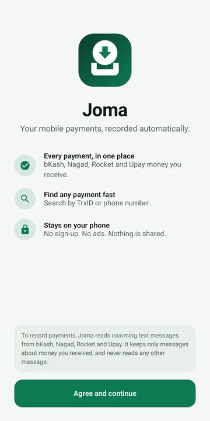
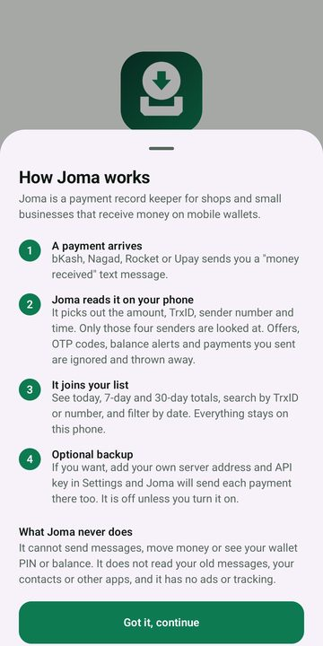
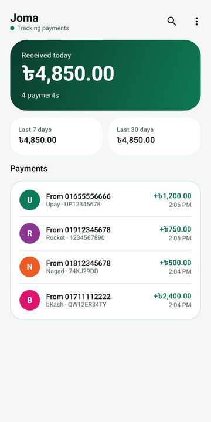
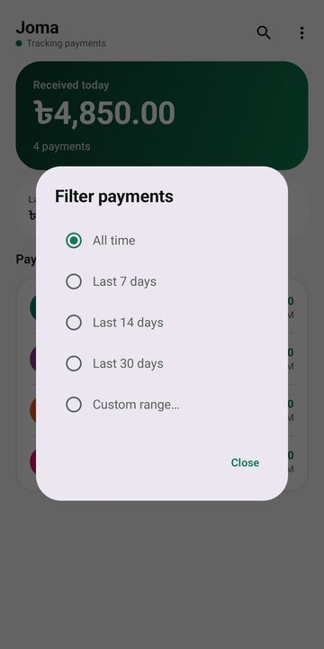

What you get
Every payment in one list
Amount, TrxID, sender number and time, labelled by wallet, added as each payment arrives.
Totals at a glance
Today, last 7 days and last 30 days, plus filters by date range.
Find any payment
Search by TrxID or phone number when a customer asks.
Private by design
No sign-up, no ads, no tracking. Records stay on your phone.
How it works
- A payment arrives.
bKash, Nagad, Rocket or Upay sends you a "money received" text message. - Joma reads it on your phone.
It picks out the amount, TrxID, sender number and time. Only those four senders are looked at. Offers, OTP codes, balance alerts and payments you sent are ignored and thrown away. - It joins your list.
Totals, search and date filters. Everything stays on the phone. - Optional backup.
If you want, add your own server address and API key and Joma sends each payment there too. It is off unless you turn it on.
Screens




Your data
Joma reads incoming messages only from bKash, Nagad, Rocket and Upay and keeps only messages about money you received. It cannot send messages, move money or see your wallet PIN or balance. Read the full Privacy Policy (বাংলা).